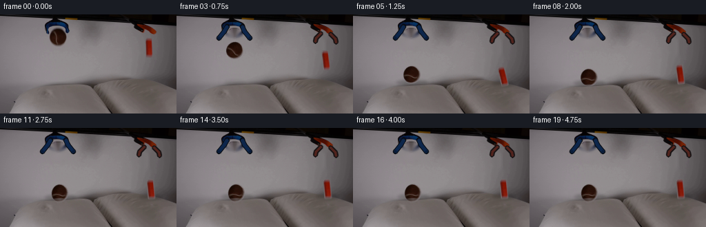
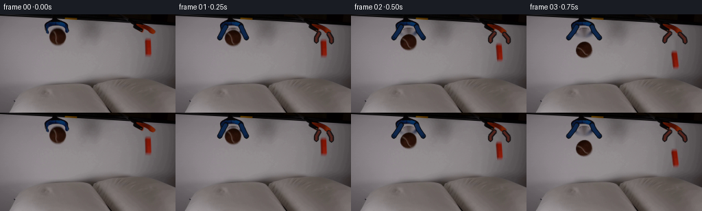

CODING AGENTS AS PIXEL WORLD MODELS
traex/GPT-5.6-Sol · 0001
点击播放 · 原生 RGB 像素
逐轮保存的候选
回放视频、检查图与代码变化。
每份候选均可单独播放。实际图片检查记录在下方工具轨迹中。
候选 01播放与检查图
点击播放 · 原生 RGB 像素


展开代码变化
--- 上一保存版本
+++ 本次保存版本
@@ -0,0 +1,165 @@
+from pathlib import Path
+import cv2
+import numpy as np
+from PIL import Image
+import artifact_io
+
+# Analytic 2-D continuation of the photographed demonstration. Everything
+# drawn here is sampled from, or color-matched to, the supplied first frame.
+ROOT = Path(__file__).resolve().parent
+first = np.asarray(Image.open(ROOT / "first_frame.png").convert("RGB"), dtype=np.uint8)
+H, W = first.shape[:2]
+Y, X = np.mgrid[0:H, 0:W].astype(np.float32)
+
+
+def soft_ellipse(cx, cy, rx, ry, feather=1.25):
+ r = np.sqrt(((X-cx)/rx)**2 + ((Y-cy)/ry)**2)
+ return np.clip((1.0 + feather/rx - r) / (feather/rx), 0, 1).astype(np.float32)
+
+
+def soft_box(x0, y0, x1, y1, radius=1.6, feather=1.0):
+ # signed distance to a rounded rectangle
+ cx, cy = (x0+x1)/2, (y0+y1)/2
+ bx, by = (x1-x0)/2-radius, (y1-y0)/2-radius
+ qx, qy = np.abs(X-cx)-bx, np.abs(Y-cy)-by
+ outside = np.sqrt(np.maximum(qx, 0)**2 + np.maximum(qy, 0)**2)
+ inside = np.minimum(np.maximum(qx, qy), 0)
+ sd = outside + inside - radius
+ return np.clip(0.5 - sd/feather, 0, 1).astype(np.float32)
+
+# The actual photographed objects, retained with their original grain,
+# illumination, highlights, and edge antialiasing.
+ball_a = soft_ellipse(84.0, 34.0, 12.4, 11.7, 1.2)
+block_a = soft_box(210.4, 33.0, 221.1, 62.4, 1.8, 1.1)
+
+# Remove held objects for the later locked-camera background. Open jaws are
+# restored below; TELEA makes the small exposed wall regions continuous.
+hole = np.maximum(ball_a, block_a)
+hole = cv2.dilate((hole > .03).astype(np.uint8), np.ones((3, 3), np.uint8), iterations=1)
+base = cv2.inpaint(first, hole, 4, cv2.INPAINT_TELEA)
+
+
+def warp_object(frame, source, alpha, src_center, dst_center, angle=0., sx=1., sy=1.):
+ """Premultiplied affine sprite compositing without rectangular fringes."""
+ cx, cy = src_center
+ th = np.deg2rad(angle)
+ c, s = np.cos(th), np.sin(th)
+ # src -> dst, anisotropic local scale followed by rotation
+ A = np.array([[c*sx, s*sy], [-s*sx, c*sy]], np.float32)
+ # OpenCV's image-coordinate rotation convention is represented above.
+ d = np.array(dst_center, np.float32) - A @ np.array([cx, cy], np.float32)
+ M = np.c_[A, d].astype(np.float32)
+ aa = cv2.warpAffine(alpha, M, (W, H), flags=cv2.INTER_CUBIC,
+ borderMode=cv2.BORDER_CONSTANT, borderValue=0)
+ premul = source.astype(np.float32) * alpha[..., None]
+ cc = cv2.warpAffine(premul, M, (W, H), flags=cv2.INTER_CUBIC,
+ borderMode=cv2.BORDER_CONSTANT, borderValue=0)
+ aa = np.clip(aa, 0, 1)
+ # warped premultiplication can have tiny negative ringing
+ cc = np.clip(cc, 0, 255)
+ out = frame.astype(np.float32) * (1-aa[..., None]) + cc
+ return np.clip(out, 0, 255).astype(np.uint8)
+
+
+def deform_pillows(img, dents):
+ """A shallow, spatially decaying cloth displacement at each impact."""
+ if not any(d > .02 for _, d, _ in dents):
+ return img.copy()
+ mapx = X.copy(); mapy = Y.copy()
+ gate = np.clip((Y-86.)/9., 0., 1.)
+ for cx, depth, radius in dents:
+ g = np.exp(-((X-cx)/radius)**2) * np.exp(-np.maximum(Y-94., 0)/44.) * gate
+ mapy -= depth*g
+ # outward movement creates the very small pillow bulges beside a dent
+ mapx -= .18*depth*np.tanh((X-cx)/9.)*g
+ return cv2.remap(img, mapx, mapy, cv2.INTER_CUBIC,
+ borderMode=cv2.BORDER_REPLICATE)
+
+
+def shadow(img, cx, cy, rx, opacity):
+ layer = np.zeros((H, W), np.float32)
+ cv2.ellipse(layer, (int(round(cx)), int(round(cy))),
+ (max(1, int(rx)), 3), 0, 0, 360, float(opacity), -1, cv2.LINE_AA)
+ layer = cv2.GaussianBlur(layer, (0, 0), 2.2)
+ return np.clip(img.astype(np.float32)*(1-layer[..., None]), 0, 255).astype(np.uint8)
+
+
+def open_grabbers(img, openness):
+ """Draw the newly exposed, opening pincer ends behind the falling pieces."""
+ z = img.copy()
+ o = float(openness)
+ # Left blue laboratory grabber: dark rims, then blue steel highlights.
+ lf = np.array([[73,17], [69,24], [66-5*o,34]], np.int32)
+ rf = np.array([[95,17], [98,24], [101+5*o,34]], np.int32)
+ for p in (lf, rf):
+ cv2.polylines(z, [p], False, (8, 10, 14), 6, cv2.LINE_AA)
+ cv2.polylines(z, [p], False, (13, 38, 75), 3, cv2.LINE_AA)
+ cv2.circle(z, tuple(p[-1]), 2, (10, 28, 56), -1, cv2.LINE_AA)
+ # Right grabber's short dark jaws open away from the orange block.
+ lp = np.array([[209,27], [207-int(5*o),34], [207-int(6*o),39]], np.int32)
+ rp = np.array([[223,28], [225+int(5*o),35], [225+int(6*o),40]], np.int32)
+ for p in (lp, rp):
+ cv2.polylines(z, [p], False, (24, 19, 20), 5, cv2.LINE_AA)
+ cv2.polylines(z, [p], False, (82, 36, 29), 2, cv2.LINE_AA)
+ return z
+
+
+def foreground_cloth(frame, cloth, cx, surface, width, strength):
+ """Let the near lip of a soft pillow overlap a resting object slightly."""
+ if strength <= 0: return frame
+ curve = surface + ((X-cx)/(width*.8))**2 * 2.0
+ edge = np.clip((Y-curve+0.3)/1.8, 0, 1)
+ side = np.clip(1 - np.abs(X-cx)/width, 0, 1)
+ a = edge*side*strength
+ return np.clip(frame.astype(np.float32)*(1-a[...,None]) +
+ cloth.astype(np.float32)*a[...,None], 0, 255).astype(np.uint8)
+
+# Centres at 0.25 s intervals: free fall, compliant impact, damped rebound,
+# and rest. Slight horizontal drift/rotation avoids mechanically vertical
+# motion while retaining the fixed camera.
+ball_y = [34,35,41,52,68,87,95,88,91,95,92.5,94.2,93.5,94,94,94,94,94,94,94]
+block_y = [47.7,49,55,66,80,89.5,91,84,86.5,89,87.2,88.6,88,88.3,88.2,88.2,88.2,88.2,88.2,88.2]
+ball_x = [84,84,84.1,84.3,84.7,85.2,85.7,86,86.2,86.4,86.5,86.6,86.6,86.6,86.6,86.6,86.6,86.6,86.6,86.6]
+block_x = [215.8,215.8,216,216.3,216.7,217.2,217.6,218,218.2,218.35,218.45,218.5,218.5,218.5,218.5,218.5,218.5,218.5,218.5,218.5]
+ball_dent = [0,0,0,0,0,1.0,5.5,2.0,2.7,4.1,3.0,3.5,3.2,3.3,3.3,3.3,3.3,3.3,3.3,3.3]
+block_dent = [0,0,0,0,.5,4.4,5.7,1.8,2.5,4.0,2.9,3.4,3.1,3.2,3.2,3.2,3.2,3.2,3.2,3.2]
+
+frames = [first.copy()]
+for i in range(1, 20):
+ cloth = deform_pillows(base, [(ball_x[i], ball_dent[i], 30.),
+ (block_x[i], block_dent[i], 26.)])
+ frame = open_grabbers(cloth, min(1., i/2.5))
+
+ # Shadows sharpen and darken as the objects approach the pillow surfaces.
+ db = max(0., 83.-ball_y[i])
+ dk = max(0., 80.-block_y[i])
+ frame = shadow(frame, ball_x[i], 98+ball_dent[i]*.45,
+ 14+8*np.exp(-db/22), .06+.17*np.exp(-db/18))
+ frame = shadow(frame, block_x[i], 98+block_dent[i]*.45,
+ 11+5*np.exp(-dk/20), .05+.15*np.exp(-dk/17))
+
+ # Texture rotation on the ball is the visible cue that it was freely released.
+ bang = (i*13 if i <= 6 else 78-(i-6)*5*np.exp(-(i-6)/3))
+ squash = 1.0
+ sy = 1.0
+ if i == 6: squash, sy = 1.10, .84
+ elif i in (9,): squash, sy = 1.05, .92
+ elif i >= 11: squash, sy = 1.025, .97
+ frame = warp_object(frame, first, ball_a, (84,34),
+ (ball_x[i],ball_y[i]), bang, squash, sy)
+
+ rang = [0,0,2,5,9,12,14,9,6,5,4,4,4,4,4,4,4,4,4,4][i]
+ frame = warp_object(frame, first, block_a, (215.75,47.7),
+ (block_x[i],block_y[i]), rang)
+
+ # Contact overlap only while touching; no overlay during either rebound.
+ bs = 0 if ball_y[i] < 91 else min(.88, .45+.08*ball_dent[i])
+ ks = 0 if block_y[i] < 86.5 else min(.82, .40+.07*block_dent[i])
+ frame = foreground_cloth(frame, cloth, ball_x[i], 100+ball_dent[i]*.30, 18, bs)
+ frame = foreground_cloth(frame, cloth, block_x[i], 99+block_dent[i]*.28, 13, ks)
+ frames.append(frame)
+
+frames = np.stack(frames).astype(np.uint8)
+assert frames.shape == (20, 144, 256, 3)
+assert np.array_equal(frames[0], first)
+artifact_io.save(frames, ROOT)
可观测工具轨迹
实际执行的命令与返回图片。
命令 1exit 0
/bin/bash -lc "cat GENERATION_RULES.md && printf '\\n---PROMPT---\\n' && cat prompt.txt"
命令 2exit 127
/bin/bash -lc "find . -maxdepth 2 -type f -printf '%p\\n' | sort && file first_frame.png"
命令 3exit 0
/bin/bash -lc "python - <<'PY'
from PIL import Image
import numpy as np
im=np.array(Image.open('first_frame.png').convert('RGB'))
print(im.shape,im.dtype, im.min((0,1)),im.max((0,1)), im.mean((0,1)))
# sample grid 16 x 9 avg + char via luminance and dominant
H,W,_=im.shape
chars=' .:-=+*#%@'
for gy in range(9):
s=''
for gx in range(16):
a=im[gy*H//9:(gy+1)*H//9,gx*W//16:(gx+1)*W//16].mean((0,1))
lum=np.dot(a,[.2126,.7152,.0722]); c=chars[min(9,int(lum/256*10))]
# hue marker
if a.max()-a.min()>25:
c='R' if a[0]==a.max() else ('G' if a[1]==a.max() else 'B')
s+=c
print(s)
# common quantized colors
q=(im//16).reshape(-1,3)
u,c=np.unique(q,axis=0,return_counts=True)
for i in np.argsort(c)[-20:][::-1]: print(c[i],u[i]*16)
PY"命令 4exit 0
/bin/bash -lc "python - <<'PY'
from PIL import Image
import numpy as np
from scipy import ndimage
im=np.array(Image.open('first_frame.png').convert('RGB')).astype(int); H,W,_=im.shape
mx=im.max(2); mn=im.min(2); sat=mx-mn
for t in [5,10,15,20,30,40,50]:
mask=sat>t
lab,n=ndimage.label(mask)
out=[]
for k in range(1,n+1):
ys,xs=np.where(lab==k); z=len(xs)
if z>5: out.append((z,xs.min(),ys.min(),xs.max(),ys.max(),im[ys,xs].mean(0).round(1)))
print('\\nT',t,'pixels',mask.sum(),'components')
for o in sorted(out,reverse=True)[:20]:print(o)
# per row/column sat >15 counts
print('rows')
for y in range(H):
c=(sat[y]>15).sum()
if c: print(y,c,np.where(sat[y]>15)[0].min(),np.where(sat[y]>15)[0].max())
PY"命令 5exit 0
/bin/bash -lc "python - <<'PY'
from PIL import Image
import numpy as np
im=np.array(Image.open('first_frame.png').convert('RGB')).astype(int)
# each cell 2x2 classify: Blue=B red/orange=O brown=b; dark=X; bright=.; edge high contrast maybe #
for (x0,x1,y0,y1,name) in [(50,120,0,70,'left'),(180,240,0,80,'right'),(0,256,75,144,'lower')]:
print('\\n',name)
for y in range(y0,y1,2):
s=''
for x in range(x0,x1,2):
a=im[y:min(y+2,144),x:min(x+2,256)].mean((0,1)); mx=a.max();mn=a.min(); d=mx-mn; lum=a.mean()
if d>25 and a[2]==mx: c='B'
elif d>25 and a[0]==mx and a[1]>a[2]+10: c='O'
elif d>12 and a[0]==mx: c='b'
elif lum<30: c='X'
elif lum<60: c='x'
elif lum<90: c='-'
elif lum<115: c='='
elif lum<135: c='+'
else:c='.'
s+=c
print(f'{y:03}',s)
PY"命令 6exit 0
/bin/bash -lc "python - <<'PY'
from PIL import Image
import numpy as np
im=np.array(Image.open('first_frame.png').convert('RGB'))
for y in range(144):
if y%2==0: print(y, np.round(im[y].mean(0),1), im[y].min(), im[y].max(), np.std(im[y]), np.quantile(im[y].mean(1),[0,.1,.5,.9,1]).round(1))
print('points')
for y in [0,4,8,10,12,14,18,22,26,30,35,40,50,60,75,90,95,100,110,120,130,140,143]:
print('\\ny',y)
for x in range(0,256,16): print(x,im[y,x],end='; ')
PY"命令 7exit 0
/bin/bash -lc "cat artifact_io.py && python - <<'PY'
try: import cv2; print('cv2',cv2.__version__)
except Exception as e: print('no',e)
try: import scipy; print('scipy',scipy.__version__)
except Exception as e:print(e)
PY"命令 8exit 0
/bin/bash -lc "python - <<'PY'
from PIL import Image
import numpy as np
I=np.array(Image.open('first_frame.png').convert('RGB')).astype(int)
# Runs for classified high sat hues in x50+
for y in range(0,70):
s=I[y]; blue=(s[:,2]-s[:,0]>15)&(s[:,2]-s[:,1]>10)
red=(s[:,0]-s[:,1]>15)&(s[:,0]-s[:,2]>15)
def runs(m):
z=np.where(m)[0]; o=[]
if len(z):
q=np.split(z,np.where(np.diff(z)>1)[0]+1); o=[f'{a[0]}-{a[-1]}' for a in q if len(a)]
return ','.join(o)
if blue.any() or red.any(): print(f'{y:02} B[{runs(blue)}] O[{runs(red)}]')
# print exact pixels key boxes mean row color extents threshold
PY"命令 9exit 0
/bin/bash -lc "cat > generate.py <<'PY'
from pathlib import Path
import cv2
import numpy as np
from PIL import Image
import artifact_io
# Analytic 2-D continuation of the photographed demonstration. Everything
# drawn here is sampled from, or color-matched to, the supplied first frame.
ROOT = Path(__file__).resolve().parent
first = np.asarray(Image.open(ROOT / \"first_frame.png\").convert(\"RGB\"), dtype=np.uint8)
H, W = first.shape[:2]
Y, X = np.mgrid[0:H, 0:W].astype(np.float32)
def soft_ellipse(cx, cy, rx, ry, feather=1.25):
r = np.sqrt(((X-cx)/rx)**2 + ((Y-cy)/ry)**2)
return np.clip((1.0 + feather/rx - r) / (feather/rx), 0, 1).astype(np.float32)
def soft_box(x0, y0, x1, y1, radius=1.6, feather=1.0):
# signed distance to a rounded rectangle
cx, cy = (x0+x1)/2, (y0+y1)/2
bx, by = (x1-x0)/2-radius, (y1-y0)/2-radius
qx, qy = np.abs(X-cx)-bx, np.abs(Y-cy)-by
outside = np.sqrt(np.maximum(qx, 0)**2 + np.maximum(qy, 0)**2)
inside = np.minimum(np.maximum(qx, qy), 0)
sd = outside + inside - radius
return np.clip(0.5 - sd/feather, 0, 1).astype(np.float32)
# The actual photographed objects, retained with their original grain,
# illumination, highlights, and edge antialiasing.
ball_a = soft_ellipse(84.0, 34.0, 12.4, 11.7, 1.2)
block_a = soft_box(210.4, 33.0, 221.1, 62.4, 1.8, 1.1)
# Remove held objects for the later locked-camera background. Open jaws are
# restored below; TELEA makes the small exposed wall regions continuous.
hole = np.maximum(ball_a, block_a)
hole = cv2.dilate((hole > .03).astype(np.uint8), np.ones((3, 3), np.uint8), iterations=1)
base = cv2.inpaint(first, hole, 4, cv2.INPAINT_TELEA)
def warp_object(frame, source, alpha, src_center, dst_center, angle=0., sx=1., sy=1.):
\"\"\"Premultiplied affine sprite compositing without rectangular fringes.\"\"\"
cx, cy = src_center
th = np.deg2rad(angle)
c, s = np.cos(th), np.sin(th)
# src -> dst, anisotropic local scale followed by rotation
A = np.array([[c*sx, s*sy], [-s*sx, c*sy]], np.float32)
# OpenCV's image-coordinate rotation convention is represented above.
d = np.array(dst_center, np.float32) - A @ np.array([cx, cy], np.float32)
M = np.c_[A, d].astype(np.float32)
aa = cv2.warpAffine(alpha, M, (W, H), flags=cv2.INTER_CUBIC,
borderMode=cv2.BORDER_CONSTANT, borderValue=0)
premul = source.astype(np.float32) * alpha[..., None]
cc = cv2.warpAffine(premul, M, (W, H), flags=cv2.INTER_CUBIC,
borderMode=cv2.BORDER_CONSTANT, borderValue=0)
aa = np.clip(aa, 0, 1)
# warped premultiplication can have tiny negative ringing
cc = np.clip(cc, 0, 255)
out = frame.astype(np.float32) * (1-aa[..., None]) + cc
return np.clip(out, 0, 255).astype(np.uint8)
def deform_pillows(img, dents):
\"\"\"A shallow, spatially decaying cloth displacement at each impact.\"\"\"
if not any(d > .02 for _, d, _ in dents):
return img.copy()
mapx = X.copy(); mapy = Y.copy()
gate = np.clip((Y-86.)/9., 0., 1.)
for cx, depth, radius in dents:
g = np.exp(-((X-cx)/radius)**2) * np.exp(-np.maximum(Y-94., 0)/44.) * gate
mapy -= depth*g
# outward movement creates the very small pillow bulges beside a dent
mapx -= .18*depth*np.tanh((X-cx)/9.)*g
return cv2.remap(img, mapx, mapy, cv2.INTER_CUBIC,
borderMode=cv2.BORDER_REPLICATE)
def shadow(img, cx, cy, rx, opacity):
layer = np.zeros((H, W), np.float32)
cv2.ellipse(layer, (int(round(cx)), int(round(cy))),
(max(1, int(rx)), 3), 0, 0, 360, float(opacity), -1, cv2.LINE_AA)
layer = cv2.GaussianBlur(layer, (0, 0), 2.2)
return np.clip(img.astype(np.float32)*(1-layer[..., None]), 0, 255).astype(np.uint8)
def open_grabbers(img, openness):
\"\"\"Draw the newly exposed, opening pincer ends behind the falling pieces.\"\"\"
z = img.copy()
o = float(openness)
# Left blue laboratory grabber: dark rims, then blue steel highlights.
lf = np.array([[73,17], [69,24], [66-5*o,34]], np.int32)
rf = np.array([[95,17], [98,24], [101+5*o,34]], np.int32)
for p in (lf, rf):
cv2.polylines(z, [p], False, (8, 10, 14), 6, cv2.LINE_AA)
cv2.polylines(z, [p], False, (13, 38, 75), 3, cv2.LINE_AA)
cv2.circle(z, tuple(p[-1]), 2, (10, 28, 56), -1, cv2.LINE_AA)
# Right grabber's short dark jaws open away from the orange block.
lp = np.array([[209,27], [207-int(5*o),34], [207-int(6*o),39]], np.int32)
rp = np.array([[223,28], [225+int(5*o),35], [225+int(6*o),40]], np.int32)
for p in (lp, rp):
cv2.polylines(z, [p], False, (24, 19, 20), 5, cv2.LINE_AA)
cv2.polylines(z, [p], False, (82, 36, 29), 2, cv2.LINE_AA)
return z
def foreground_cloth(frame, cloth, cx, surface, width, strength):
\"\"\"Let the near lip of a soft pillow overlap a resting object slightly.\"\"\"
if strength <= 0: return frame
curve = surface + ((X-cx)/(width*.8))**2 * 2.0
edge = np.clip((Y-curve+0.3)/1.8, 0, 1)
side = np.clip(1 - np.abs(X-cx)/width, 0, 1)
a = edge*side*strength
return np.clip(frame.astype(np.float32)*(1-a[...,None]) +
cloth.astype(np.float32)*a[...,None], 0, 255).astype(np.uint8)
# Centres at 0.25 s intervals: free fall, compliant impact, damped rebound,
# and rest. Slight horizontal drift/rotation avoids mechanically vertical
# motion while retaining the fixed camera.
ball_y = [34,35,41,52,68,87,95,88,91,95,92.5,94.2,93.5,94,94,94,94,94,94,94]
block_y = [47.7,49,55,66,80,89.5,91,84,86.5,89,87.2,88.6,88,88.3,88.2,88.2,88.2,88.2,88.2,88.2]
ball_x = [84,84,84.1,84.3,84.7,85.2,85.7,86,86.2,86.4,86.5,86.6,86.6,86.6,86.6,86.6,86.6,86.6,86.6,86.6]
block_x = [215.8,215.8,216,216.3,216.7,217.2,217.6,218,218.2,218.35,218.45,218.5,218.5,218.5,218.5,218.5,218.5,218.5,218.5,218.5]
ball_dent = [0,0,0,0,0,1.0,5.5,2.0,2.7,4.1,3.0,3.5,3.2,3.3,3.3,3.3,3.3,3.3,3.3,3.3]
block_dent = [0,0,0,0,.5,4.4,5.7,1.8,2.5,4.0,2.9,3.4,3.1,3.2,3.2,3.2,3.2,3.2,3.2,3.2]
frames = [first.copy()]
for i in range(1, 20):
cloth = deform_pillows(base, [(ball_x[i], ball_dent[i], 30.),
(block_x[i], block_dent[i], 26.)])
frame = open_grabbers(cloth, min(1., i/2.5))
# Shadows sharpen and darken as the objects approach the pillow surfaces.
db = max(0., 83.-ball_y[i])
dk = max(0., 80.-block_y[i])
frame = shadow(frame, ball_x[i], 98+ball_dent[i]*.45,
14+8*np.exp(-db/22), .06+.17*np.exp(-db/18))
frame = shadow(frame, block_x[i], 98+block_dent[i]*.45,
11+5*np.exp(-dk/20), .05+.15*np.exp(-dk/17))
# Texture rotation on the ball is the visible cue that it was freely released.
bang = (i*13 if i <= 6 else 78-(i-6)*5*np.exp(-(i-6)/3))
squash = 1.0
sy = 1.0
if i == 6: squash, sy = 1.10, .84
elif i in (9,): squash, sy = 1.05, .92
elif i >= 11: squash, sy = 1.025, .97
frame = warp_object(frame, first, ball_a, (84,34),
(ball_x[i],ball_y[i]), bang, squash, sy)
rang = [0,0,2,5,9,12,14,9,6,5,4,4,4,4,4,4,4,4,4,4][i]
frame = warp_object(frame, first, block_a, (215.75,47.7),
(block_x[i],block_y[i]), rang)
# Contact overlap only while touching; no overlay during either rebound.
bs = 0 if ball_y[i] < 91 else min(.88, .45+.08*ball_dent[i])
ks = 0 if block_y[i] < 86.5 else min(.82, .40+.07*block_dent[i])
frame = foreground_cloth(frame, cloth, ball_x[i], 100+ball_dent[i]*.30, 18, bs)
frame = foreground_cloth(frame, cloth, block_x[i], 99+block_dent[i]*.28, 13, ks)
frames.append(frame)
frames = np.stack(frames).astype(np.uint8)
assert frames.shape == (20, 144, 256, 3)
assert np.array_equal(frames[0], first)
artifact_io.save(frames, ROOT)
PY
python generate.py
python - <<'PY'
from PIL import Image
import numpy as np
z=np.load('pixels.npz')['pixels']
print('packed',z.shape,z.dtype)
I=np.array(Image.open('first_frame.png').convert('RGB'))
F=np.array(Image.open('frames/00.png').convert('RGB'))
print('frame0 exact',np.array_equal(I,F))
for i in range(20):
a=np.array(Image.open(f'frames/{i:02d}.png'))
if i: p=np.array(Image.open(f'frames/{i-1:02d}.png')); print(i, np.count_nonzero(np.any(a"'!=p,2)), np.abs(a.astype(int)-p.astype(int)).mean().round(3))
PY'保存候选 1 份；完成命令 9 次；可验证图片返回 0 张。原始 API 响应与完整日志保留在本地。